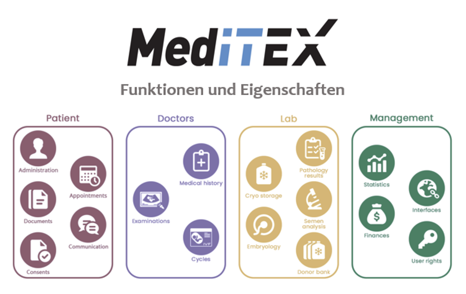

Daten von Zentren für assistierte Reproduktion werden prospektiv über MedITEX gesammelt, aggregiert und im Querschnitt mit Daten anderer Zentren oder im Längsschnitt mit den eigenen Daten verglichen und einer multiparametrischen Analyse unterzogen. Neu gegründete Zentren erforschen ihre eigenen Entwicklungsmodelle mit Hilfe des bestehenden Datenpools von MediTEX. Etablierte Zentren analysieren die aktuelle Situation durch Datenvergleich und suchen nach Möglichkeiten, diese zu verbessern.
Eine der wichtigsten Grundlagen sind die Daten einer großen Anzahl von Zentren für assistierte Reproduktion weltweit. Mit Softwares von CRITEX sind diese Daten leicht verfügbar.
MedITEX IVF ist von IT-Spezialisten und medizinischen Experten speziell für Kliniken, Zentren und Praxen entwickelt, die sich schwerpunktmäßig mit dem unerfüllten Kinderwunsch beschäftigen. Die Software lässt sich individuell an die jeweiligen technischen und organisatorischen Anforderungen im Praxisalltag anpassen und ermöglicht über die übersichtliche Benutzeroberfläche die intelligente Organisation von Abläufen sowie die transparente Dokumentation von Informationen und sensiblen Daten. Dank der aufwändigen visuellen Umsetzung wird jede einzelne gewonnene Eizelle bezüglich Entwicklungsstadium, Behandlungsart und vorgesehener Maßnahmen ebenso wie der gesamte Therapiezyklus grafisch dargestellt. Ein ausgereiftes Sicherheitskonzept schützt vor unerlaubtem Zugriff und Datenverlust.
MedITEX IVF umfasst neueste Techniken wie Barcode, RFID, DICOM, Online-Patienten-Informationsportal und Schnittstellen zu medizinischen Geräten und Software sowie zahlreiche Erweiterungsmöglichkeiten. Darüber hinaus berücksichtigt die Software die jüngsten Entwicklungen und Anforderungen in der Reproduktionsmedizin. Dazu gehören neue Richtlinien zur individuellen Identifizierung und zum Tracking von Eizellen und Spermienproben, berufspolitische Vorgaben an Nachweise und Datenhaltung, die zunehmende Bedeutung des Qualitätsmanagements sowie die Einführung neuer Therapieformen oder rechtlicher Regelungen.
Die Software wird in 42 Länder und 400 IVF Kliniken eingesetzt.
MedITEX IVF Registry ist ein eigenständiges Eco-System zum Sammeln von (IVF-)Daten aus Kliniken einer bestimmten Zielgruppe Es bietet Ihnen Out-of-the-Box-Module, die individuell anpassbar sind und auch lokalisiert werden können. Es wurde erstellt, um die Anforderungen von nationalen Registern, Gesellschaften oder Klinikverbänden zu erfüllen.
MedITEX ist der zentrale deutsche IT-Dienstleister und Softwareanbieter und das elektronische IVF-Register betreibt und hostet für jeden Zyklus der Reproduktionsmedizin in Deutschland.
Die Empfehlungen konzentrieren sich auf sechs Hauptbereiche: Reproduktionsmedizin, Wissenschaftliches Back Up, Personalmanagement, Reproduktionsbiologie, Institutesmanagement und Unternehmensberatung.
Um die Umsetzung von Entwicklungsempfehlungen zu gewährleisten, könnte dem Zentrum für Kontrolle ein Audit-Service zur Verfügung gestellt werden. Im Rahmen des Audits wird vor allem die Durchführung des medizinischen Personals, des Labors und der allgemeinen Organisation überprüft.
Auf der Grundlage der erhaltenen Informationen und Vergleichsergebnisse werden die Stärken und Schwächen des Zentrums ermittelt und ein genauer und effektiver Marketingplan entwickelt.